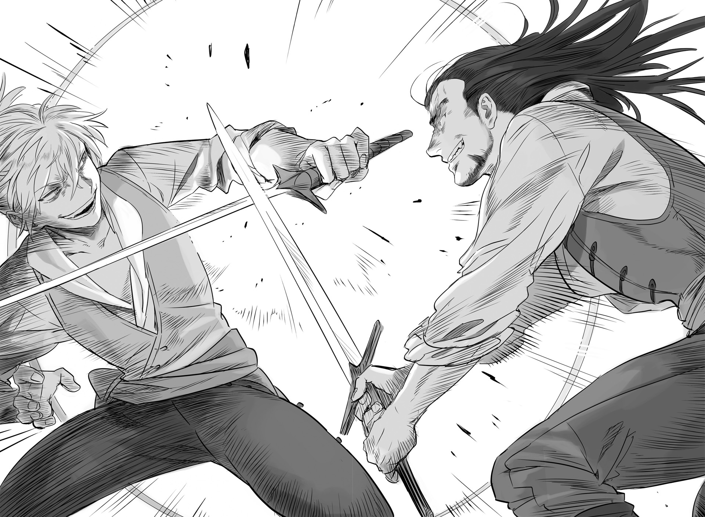

Chapter 4 – Two Eccentrics
.
Part 1
「Those guys must be going pale around this time.」
「General, you surely won’t die in a decent way.」
The adjutant glared with a scathing expression at Mikhail who was stretching his body on his horse.
Even he wasn’t accompanying this suicidal person because he liked it.
「I have no intention at all to die peacefully on bed. But even like this it’s really hard for me to die. That’s why just follow me with the feeling of safety like you’re boarding a large ship!」
「I’m praying that the ship isn’t a ship made from mud.」
Two horses were running straight to the south of Trystovy like arrow. The farmers who didn’t understand anything were watching them while trembling as though they had seen a demon king.
.
「This country is really gloomy.」
「Well of course. It will be scary if a country that has been embroiled in civil war for more than ten years is filled with cheerful people!」
「Well, that might be true but still……」
The two of them were showered with fearful gazes at the village that they stopped by at along the way. Mikhail smiled wryly as he recalled the shabby meal that was provided to them.
Shouldn’t people smile brightly exactly because they had been pushed down to the very bottom?
Exactly because they had nothing more to lose that they could make an attempt freely without any calculation or prospect of victory weighing them down.
They should fight rather than lamenting and exert themselves to accomplish something in their life.
Perhaps Mikhail was able to think like that because he was strong since he was born.
──Since he was born, Mikhail never considered avoiding battle even once.
.
Part 2
When Mikhail grew up enough to become aware of his surrounding, he would enter the forest to help her mother who was living at the outskirt of the village mixing herbs to make a living.
His mother was kind, but the right half of her face was hideously burned. She extremely disliked to meet with other people.
Before he realized it, it became Mikhail’s job to interact with other people. He also became the one in charge of procuring or buying medicine ingredients.
Mikhail was seven years old when he learned that the one who hurt his mother’s face was the legal wife of the noble who took his mother as a mistress.
At that age, even Mikhail noticed that they were treated like cancer by the village.
It seemed the noble gave his mother money and land as apology.
A part of that money was given to the village, so the villagers were also unable to openly treat his mother badly.
Also only few people in the village had knowledge about medicine. The medicine that his mother mixed was something that was hard to come by in the village.
──But children didn’t have the capacity to make consideration for such adult circumstance.
Mikhail didn’t have a father and he also had to work to help his mother. He was a suitable target of harassment for the village’s children.
「Don’t act cheeky when you don’t even have a father!」
「Get out of this village with your ugly mother!」
Ignoring their insult about his father, Mikhail wasn’t a mild-mannered boy who could stay quiet when his mother was insulted.
Normally this would only end as a silly quarrel between children. But it was simply a case of bad luck.
Mikhail already had strength that was disproportionate for his age since he was little.
That was why he was able to enter the forest and gathered materials there even though such work should be too hard for a normal child.
Mikhail punched but without putting his full effort into it, however his fist broke the ribs of the boy who acted as the children’s leader.
In a further stroke of bad luck, there was an epidemic at the winter of that time. The injured boy caught it and easily died.
Since then Mikhail and his mother was openly treated as nuisance by the village.
The villagers doubled the price of food and daily necessities that they sold to the mother and children. Mikhail’s family that was already poor became even poorer. Gradually his mother often felt unwell and his physical condition deteriorated.
When Mikhail desperately begged the villagers to return their price to normal, all the villagers didn’t even try to hide their cold expression and said this.
「You still have the consolation money from the feudal lord right!? Stop being stingy and use that money!」
Mikhail said that there wasn’t any money like that in his house, but naturally the villagers ignored him.
Even when he asked his sick mother the location of the money, his mother kept repeating that they had no such money.
What Mikhail could do was only hunting animal and gathering edible wild plants in the forest to feed his mother.
The villagers who thought that the mother and son still had money and the greatly frustrated Mikhail never made up with each other in the end.
When Mikhail was eleven, his mother died quietly in her sleep.
When his mother sensed that her death was approaching, she told Mikhail that his true father wasn’t the feudal lord but a knight who was the lord’s friend, and that his father was sleeping in a grave deep inside the forest, and that she was hiding a present for Mikhail in that grave. She then closed her eyes quietly after telling Mikhail that.
His mother’s life since coming to this village was like a long night right after the sun set.
Perhaps his mother’s sun had set completely when his father died.
There was only a faint glow on sunlight remaining for her.
That night, Mikhail cried loudly for the first time.
The next morning, Mikhail left his house before the first chirp of the bird and headed to the forest where his father was buried.
At eleven, Mikhail’s height was 160 cm, while his weight was more than 60 kg. He wouldn’t be found lacking even if he was compared with an adult.
Furthermore his physical strength far surpassed his appearance. He looked abnormal even by untrained eyes.
It could be said that what the villagers feared was that abnormal strength of Mikhail.
Mikhail weaved his way through the forest that he was familiar with since his childhood and after two hours running he found the grave at the side of a small spring.
From a glance, Mikhail understood that this was the grave of the man that his mother loved.
Just as his mother’s last words said, there was a small hidden shutter behind the relief. Inside it there was a long sword that looked splendid even in a child’s eye.
It was too big for a kid to carry, but when Mikhail drew it out, the sword was strangely fitting in his hand.
This sword was something that his mother bought using the enormous consolation money that the feudal lord gave to her.
──It was just as his mother said, they almost had no money at all. That was because his mother changed the money into a sword because she wanted Mikhail to walk the path of knight just like his father when he became adult.
Unconsciously Mikhail held up the sword with both hands and kneeled.
And then he swore in his heart that he would definitely become a knight that his mother and father wouldn’t be ashamed of.
.
But that wish immediately became impossible to achieve.
What Mikhail saw when he went home was the villagers searching the house to take the consolation money from the feudal lord with his mother’s corpse set aside carelessly.
Mikhail felt like the body in his blood was boiling.
──His mother was dirtied.
In fact, he could see the sign that his mother corpse had been groped around when the villagers searched for a clue.
Mikhail learned for the first time that human could fall that low for the sake of money.
「Oi, you shitty brat! Where’s the money!」
「The tax reduction to the village is going to stop now that this woman is dead. The dead doesn’t need that money you’re hiding!」
「Good grief, just what was she planning to do to keep that money so zealously until she die like this……」
.
「Is that everything you want to say?」
Mikhail laughed in amusement.
It seemed that when his rage reached the peak, he would feel amused instead.
It made him disgusted that he was breathing the same air with these guys. In that case he should just erase them.
「What? You got a nice sword there.」
The man who approached careless got his head flying in the air without him knowing what had happened to him.
「Don’t touch it as you please. Well, looks like you can’t hear anymore even if I tell you that.」
「HIIIIIIIIIIIIIIIIIIH!」
Their comrade died.
Mikhail killed him without the slightest hesitation. The men who were there shuddered.
「D-don’t think that you can get away after doing something like this!」
「Who is the one who should be worried here about getting away?」
It seemed the men still didn’t understand who was the strong and the weak here. It was truly an unforgivable insolence.
Another man lost his head.
「Mi-mi, Mikhail is mad!」
「Hurry! Call the soldiers here!」
「Hee? So you don’t mind even if I report to them that you were trying to snatch the consolation money from the lord and you were groping the corpse of his mistress.」
The men froze when Mikhail said that.
They couldn’t let that be known. There was no way they could. What the villagers had done were clearly a traitorous act toward the feudal lord.
If they were rebuked because they didn’t do their duty even though they had been given tax reduction, they might be asked to pay the amount of the tax reduction until now.
The villagers finally realized that they were the one hunted in this situation.
Even if they wanted to seal Mikhail’s mouth, they didn’t feel like they could win against him who was carrying a sword.
Only the soldiers of the feudal lord could possibly win against him, but that would be the same as telling the feudal lord about the truth of the situation.
This is absurd, thought the men. They were aghast by the unreasonable situation they found themselves in.
Like this with two people already killed they would only meet loss.
「Now then, do you understand your own position now?」
They were filled with fear that they might be killed here. They screamed and broke into a run while leaving behind their friends’ bodies.
「I’m sorry Kaa-san. You can rest for eternity with Tou-san from here on.」
Mikhail carried his mother’s unspeaking body on his back and set fire on his house before heading to the grave inside the forest once more.
And then he never returned to his birthplace anymore.
.
Part 3
Mikhail than traveled through many battlefields as a mercenary. By a strange coincidence he ended up entering the service of Answerer Kingdom and he finally climbed up until the position of general.
In a sense his mother’s wish for him to become a knight could be said as coming true in an even greater form.
But Mikhail’s harsh childhood in the village had taken away the general desire that any man should have. He didn’t have any particular worldly desire.
Alcohol, woman, promotion, none of them could fill Mikhail’s heart.
It was only when he reconfirmed his strength amidst battle that Mikhail’s parched soul could be moistened.
After granting his mother’s wish for him to become a knight, Mikhail didn’t have the slightest intention to suppress his own desire.
Mikhail Kalashnikov would continue to run through battlefield and make flowers of blood bloomed until he died in the battlefield as the strongest warrior.
He wished that the enemy’s general Baldr would be a worthy man who he could compete together with.
.
Part 4
「Who are you!? Speak your name!」
A soldier pointed his spear with hostility/. Mikhail roared his reply from on top the horse proudly.
「I am the general of the right of Answerer Kingdom, Mikhail Kalashnikov! I came here in order to ascertain his highness Baldr’s manliness! I ask you to tell his highness my desire to have an audience with him!」
Beside him his adjutant was groaning Aa~aa and looked up to the sky with a grimace.
Depending on the situation, the other side couldn’t be blamed even if they considered Mikhail’s reckless words as a challenge for an all-out confrontation.
But Mikhail easily decided that if he died here then in the end he was only a man of that level, and if Baldr tried to kill him then Baldr too was just someone of that level.
However unexpectedly death often avoided a warrior the more they were resolved to accept death.
A man who was loved by the heaven as warrior couldn’t die just because they wanted to die.
He was fine dying anytime, but he didn’t want to die in a way that he would regret. That might be the one thing that the man named Mikhail truly feared the most.
The soldier who was overwhelmed by Mikhail’s uncommon pressure also had his hostility blown away to somewhere. He hurried ran to contact his superior.
The report reached Baldr around half an hour after that.
「Y-your highness crown prince! General Mikhail of Answerer Kingdom has come alone asking for an audience!」
「WHAAAAAAAAAAAAAAAATT!? No no no no no, what the hell is that? He isn’t leading his troops or anything?」
「He is accompanied by only an adjutant.」
「Does he want to die? Don’t tell me he is dreaming to defeat this kingdom’s government on his lonesome?」
Barbarino was feeling indignation and hit the table.
Mikhail’s action certainly looked like he was looking down on Mulberry’s troops. If there was someone smart in the dukedom that knew of this, they would definitely proclaim that.
But──.
「We also can’t possibly kill him. Although we will get into battle with him in the near future, we still haven’t officially get into a war with Answerer Kingdom.」
If they rashly killed Mikhail here, they would give an excuse for Answerer Kingdom and the neutral countries to join the war.
If the man named Mikhail had calculated until that far, then he might actually be a capable tactician despite his muscle-brain appearance.
Baldr’s frown deepened in bewilderment.
「──Should we turn him back?」
Baldr slowly shook his head at the finance official Mario’s question.
「We can’t let ourselves look cowardly here. The enemy might advertise that we are scared of them.」
The advantage lied with the enemy no matter how the dice rolled.
The only thing that Baldr could do was just to keep the damage at minimum.
If it was asked why there was nobody else who ever did something like this if it was so advantageous, then it was simply because there was no eccentric who would throw away his life by riding alone into the middle of enemy base.
And the possibility of that person getting killed depending on the opponent’s mood wouldn’t be low at all, after all the opponent might stop caring if they would suffer loss no matter what anyway.
A human who could make such gamble could only be thought as someone whose defensive instinct as a human had been paralyzed somewhere.
『Ka-ka-ka! So even this world hath its share of eccentric.』
Sanai laughed in delight inside Baldr.
(Sanai-dono, do you have an idea of what is this about?)
『It’s pointless to rack yer brain. It wouldst be a waste of time to try to guess what goes in the head of a man runnin’ to his death.』
(──Running to his death?)
『Well, how should I explain it……he is talking about those people who think that throwing away their life immediately for their obsession is a virtue, I think?』
It was Masaharu who answered Baldr’s question.
It was hard to express the view that such eccentric had for life and death in words. Masaharu’s explanation in the end was just something makeshift that he threw together from his memory of manga and light novel.
In the closing years of the Warring States period where the price of life was cheap, there were men who intentionally treated their life even more cheaply to obtain the brief radiance of life.
『The dead wouldst not play. But, the eccentric wouldst play. Enjoying even death art the style of the eccentrics.』
Sanai who said that was also an eccentric himself.
While his colleagues were busily preparing for battle, he would only glance at them while calmly drinking sake and enjoying noh theatre. Then at the battlefield he would wear a battle surcoat with showy embroidery of gold thread and went into a rampage.
Actually this wasn’t something was really well known, but there were few people who wore flashy outfit in the battlefield.
Even that Date Masamune who was known to like being flashy would wear plain armor and helmet so that he wouldn’t stand out in the battlefield.
When Sanai encountered Masamune in the Battle of Matsukawa and dueled him one-on-one, he never even thought that the warrior with plain armor and helmet was actually Masamune.
If for example Masamune wore something like dazzling western armor, then at that time Sanai would definitely give everything he had to take Masamune down even if he had to die in his attempt.
In the battlefield, standing out would lead directly to death.
That was why those who stood above other would wear plain armor and helmet though they would still be forged by skilled craftsman.
And yet Sanai dressed to stand out instead at that time. That was what made him an eccentric, but there was other man who far surpassed Sanai in being an eccentric.
As everyone knew, it was that nice guy Maeda Keijirou Toshimasu.
The time that Sanai spent with Keijirou as comrade was unexpectedly short.
That was because while Sanai was fighting Date army at Fukushima together with Honjou Shigenaga, Keijirou was in a campaign to Yamagata together with his best friend Naoe Kanetsugu.
Even so Keijirou’s eccentricity reached Sanai’s ear.
Or rather Keijirou was truly a distinctive existence as a war comrade of the same generation.
Although Sanai was an eccentric, his loyalty to his lord was unwavering. It could be seen from how he presented all the fortunes he had saved to Uesugi Kagekatsu for war fund in preparation for Sekigahara.
But Keijirou sometimes would even play prank on his lord without any compunction.
He wouldn’t take any notice even if his lord became exposed to danger because of that. He coolly decided that if his lord died because of his prank then in the end his lord was only someone of that level.
In the past Keijirou once served Maeda Toshiie.
Keijirou was entrusted with the role to be Toshiie’s body double and wore beautiful armor.
But Keijirou charged into the enemy with his spear and yelled 「I am the body double of Maeda Toshiie!」 very loudly.
There was no meaning in being a body double at all if the body double yelled out of his lung to the enemy that he was a body double.
Thanks to that the real Toshiie was found out and the enemy immediately focused their attack on him. He ended up being cornered until he almost died.
He didn’t just use his life, he even gambled with his lord’s life to have fun.
Trying to understand such ephemeral train of thought was a mistake in itself. That was what Sanai said.
『Well, I guess there wouldst not a monster like Keijirou here.』
If someone lived in the same way like Keijirou, then nine out of ten, no, ninety nine out of a hundred that person would die.
To live like those eccentrics, one needed fortune and power to live that overwhelmed others.
That person would definitely die if they lacked either one.
It was only natural that one would need abnormal strength to live in an abnormal way.
As expected even Sanai didn’t think that Mikhail would be an eccentric at Keijirou’s level.
.
Part 5
「──Please this way.」
「Umu, much obliged.」
When a chamberlain guided Mikhail to inside Mulberry, Mikhail laughed cheerfully without showing any timidity.
His smile was innocent like a child who received a reward. It made the chamberlain slightly wide eyed.
Human would lose this kind of innocent expression as they aged.
The chamberlain just barely masked his expression in a display of professionalism and continued heading toward the estate where Baldr set up his office.
Of course there was a slight chance that this was a trap.
In case this would be an assassination attempt, two hundred of the elites under Ramillies’s command were lined up orderly at the left and right of the path leading to the crown prince’s office to welcome Mikhail and his adjutant.
They were chosen elite force who had fought together with Baldr at the second Antrim war.
With Ramillies on the lead, the loyalty that they offered to Baldr was unshakeable like rock.
Killing intent was radiated from the left and right. It was so thick it felt like the killing intent was materialized physically. But to Mikhail it only felt like a pleasant breeze.
「Umu, what a splendid command! Now I’m looking forward even more to the meeting!」
「You aren’t even thinking about what a bother you are to your surrounding.」
The adjutant stared at Mikhail resentfully with a face of resignation.
Mikhail was in high spirits as though he was a kid. It made the murderous Antrim soldiers to be taken aback and lost their hostility.
They didn’t know just how mighty Mikhail actually was, but any decent human would shrink back if he was showered with the killing intent of 200 people in the middle of enemy base. That was the self-defense instinct of a living creature.
Someone who didn’t feel fear when facing a group who wanted to kill him meant that person had something vital as a human completely broken inside him.
(──It might be possible to defeat this man, if all two hundred of us rush him without regard of our life.)
While his subordinates were taken aback, Ramillies was the only one who calmly analyzed Mikhai’s fighting strength.
The world was really vast.
He never thought that there would be someone like Baldr and Maggot among the enemy.
There was no doubt that Mikhail was a man who was similarly inhuman like Maggot and the others.
「Oh? You’re really strong aren’t you old man!」
Mikhail casually patted Ramillies’s shoulder with a gaze as though he had found a treasure.
「Well, I’m certainly an old man, but you yourself also isn’t that young right?」
「Ka-kah! A man is in their prime only after they aged pass forty years old!」
Surely this man would still boast that his current self was in his prime even after he aged passed fifty or sixty years old.
Ramillies unconsciously smiled wryly when he noticed that Mikhail wasn’t bluffing but saying that seriously.
This man had a candidness that made Ramillies envied him.
Ramillies wondered just how fun his life would be if he could live as he pleased just like this man. Even Ramillies whose loyalty was devoted to Baldr and Viktor couldn’t help but have such thought after facing this man.
「By the way, can I entrust you with a message for Olten when you return to the dukedom?」
「Olten……? Aa, you mean the new great general of the dukedom. Is he your acquaintance old man?」
「Yeah. He was a colleague at my youth.」
「I don’t know whether it is you old men who are amazing or it is the youngsters who are lazy, I wonder which is it?」
Even Mikhail held some doubt toward the case of Olten who had retired in the past getting appointed to be the new great general.
However after ascertaining the resolve and might of the old general Ramillies from this close, he couldn’t help but accept that he was a really tough old man.
Although there was no way he would lose when facing him one on one, as expected even Mikhail wouldn’t be able to avoid death if he fought with the two hundred men under Ramillies’s command right now.
「I won’t mind doing a little favor like that for you if I can return back alive──what should I tell him?」
「I have no intention to condemn your reason for falling so low. However I will use my whole body and soul to crush everything that you bastard want to protect. Tell him that.」
「Good grief, you’re really one extreme old man.」
Ramillies couldn’t forgive Olten’s scheme that assassinated Piaggio at the slightest.
There wouldn’t be any time for them to exchange words leisurely if they encountered each other in the battlefield. He would simply bisect Olten into two if they met.
That was why Ramillies entrusted a message through Mikhail. So to speak this was his declaration to his old friend that he was breaking off their relations.
However Mikhail felt that Ramillies’s straightforward manliness was praiseworthy.
「──I have heard your message loud and clear!」
He was curious of how would Ramillies and Olten’s fight went, but as expected a battle was still fun even taking this kind of bonds into account.
He had already found enough reason for fighting, but Mikhail felt his expectation toward Baldr was still rapidly increasing.
There was no way the caliber of the lord who obtained the loyalty of an old general of this level would be mediocre.
Perhaps he would be a man who would grant Mikhail the most exhilarating battle in his life.
Aa, he wanted to meet him quickly. And then he wanted to fight him!
.
「His highness the crown prince shall grant you an audience. I sincerely ask you to be in your best behavior.」
「Umu, leave it to me!」
The adjutant clung on Mikhail with a pale face because of Mikhail’s reply that didn’t make his worry abated at all.
「Are you listening general? Don’t acting rashly, don’t acting rashly by any means all right?」
「Ha-ha-hah! I’m better at behaving impudently you know?」
「Don’t talk like that’s a good thing!」
The door of fate was finally opened while the adjutant’s stomachache was getting even worse.
.
A chill ran through Baldr’s spine the moment the door was opened.
It wasn’t because of killing intent or fighting spirit. If he had to put it into words, it was because of the presence of someone strong.
Baldr’s body was intimately familiar with a similar sensation like this.
(Please don’t tell me that this person is the same kind like Kaa-san……)
Mikhail walked forward with his huge body swaying with an air of composure.
The elders starting from Barbarino and Pietro glared murderously at how brazen and composed Mikhail was behaving. From their perspective Mikhail was simply mocking them.
Mikhail had no such intention.
He was just feeling excited, but by no means he was looking down at them. But perhaps such attitude was even nastier than simply looking down on others.
There were a distance of 30 meters between them.
Mikhail finally saw Baldr’s figure from nearby.
While Baldr’s looks was like a graceful noble, he felt an overwhelming aura that couldn’t be hidden from him.
A caliber to know enough about the joy and weight of taking away other’s life while drenched in blood and mud and sweat, but having the ability to control it.
People called those with such caliber as hero since time immemorial.
Mikhail was unable to become a hero due to the disposition he was born with or perhaps because of the way he was raised.
There was a domain that couldn’t be reached by just being strong.
The number of man Mikhail killed with his hand surpassed Baldr by a great amount. But he couldn’t become a hero with the way he was.
He might be able to become the strongest using a sword that he wielded only for his own sake, but he would never become a hero.
「──This is great!」
That was the first thing Mikhail said with satisfaction in his tone.
All the top brasses who were present here snapped with pulsing blood vein on their forehead.
「Enough screwing around. I told you to not act rashly just now, ou」
The adjutant elbowed Mikhail’s side. Mikhail groaned Oufu and bent forward before he kneeled in front of Baldr.
「Allow me to introduce myself once more, I am the general of the right of Answerer Kingdom, Mikhail Kalashnikov. I’m struck with great awe for this honor of being able to see your highness’s countenance.」
「R-right……」
Baldr didn’t know what kind of face he should make in this kind of time and he unconsciously recalled the heroine of a certain anime that Masaharu liked.
He really couldn’t judge whether he should laugh or be angry here.
「You have done well journeying from afar to arrive here, is that what I should say?」
Baldr rethought it. As expected he could only laugh here.
「I can’t thank your highness enough for granting my extremely rude request for audience. As expected from the hero whose name spread far and wide in Antrim, I am truly in awe.」
Mikhail spoke from the bottom of his heart with his eyes shining in delight like a boy.
He would be able to fight against such hero. This was a miraculous good luck for him. Not all warriors could experience such thing no matter how much they wished for it.
「By the way, there is a matter that I wish to ask you sir. I hope that you can answer me.」
「I shall answer anything if it’s something that I can answer.」
Mikhail replied lightheartedly. Baldr’s blue eyes glinted like the color of darkened blood.
Mikhail’s boldness was impressive, but it would be nothing more than idiocy if he went too far with it.
「Is it the truth that Answerer Kingdom is joining this war in Trystovy Dukedom’s side?」
「Of course, 20000 troops has been dispatched from Nedras Kingdom and arrived here in order to be an ally for the dukedom.
It seemed this man was a real idiot.
Hearing Mikhail brazenly answered like that, Barbarino’s hand moved toward the handle of his sword and he yelled angrily.
「Don’t screw with us! You bastard, what the hell is your intention!」
It couldn’t be helped that Barbarino was enraged. It was like Mikhail was saying, I’ll attack your country after this so best regards. There was no way anyone would really give him their best regards when they were told that.
Was this man had bottomless stupidity, or perhaps──.
『Youngster, I told ye to not think about it!』
Sanai scolded Baldr. Even so Sanai couldn’t hide his joy completely.
An eccentric knew another eccentric. It was an unbelievable coincidence that he was able to encounter a similar eccentric like him in this other world.
No, perhaps this was an inevitability.
(E-even if you tell me to not think about it……)
『An eccentric wouldst say that even death is fun you know? That guy art having fun watching your reaction.』
(……Eccentric……)
Baldr felt dizzy facing someone who was this lacking in common sense.
In other words, Mikhail was enjoying Baldr’s reaction, what he was feeling after he knew that Mikhail was an enemy and how he was treating him after that.
It seemed that he wasn’t caring at all that he might be killed here as the result of that.
He had to risk his life exactly because it was for fun. And then the more dangerous and risky it was the funnier it would be.
Baldr was still a person of common sense regardless of how abnormal he was. There was no way he could comprehend Mikhail’s pattern of thinking.
But even so, he understood that he was unable to understand this man.
At the very least for Mikhail it was the first time someone showed such reaction to him.
「Well now, could it be that your highness is also someone who like to play prank?」
「Can you not group me together with you? Let’s see, it’s simply that I know of another troublesome man who love to play prank just like you in this world.」
『Indeed, indeed.』
There was a lot of this kind of eccentric person at the closing years of the Warring States era when Sanai was alive.
Like Sai Douji, Kuruma Tanba, and Kitadzume Daigaku who fought together with Date Masamune……they were people who truly loved fighting from the bottom of their heart.
They delighted in it. They would risk their life even in just a contest of skill.
Even if they lost their life because of that, they would die in satisfaction without even a word of complaint.
They were that kind of men.
「──I see, I wish to see such man with my own eyes at least once.」
Mikhail suddenly leaned forward because his interest was attracted.
Although his life was his own and he only had that one life, he played around with it to enjoy himself. Mikhail had never seen someone else that was similar like him until now.
「──You want to meet him?」
「This Mikhail has already been like this since I was born. And I have never met anyone who is as mischievous as myself until now.」
He had encountered warriors who he could respect.
He had also encountered man with might that rivaled him. He had also met general with leading ability that surpassed him.
But, he had never met a man with the same disposition like him.
That was only natural. No human wanted to die.
The men who went to the battlefield had various reasons for doing so. Some wanted to protect their family, some wanted to protect their country and birthplace, some fought for their ambition to reach success in life, and above all else they all fought to survive.
There was no way a human fought just for playing around and having fun, searching for a place to die.
「──Very well. I’ll let you meet him.」
Baldr said. Then he nastily asked with a mischievous smile.
「But, what will you provide as compensation for that?」
Baldr already knew what Mikhail’s answer would be.
Mikhail too realized that among the warriors in this Mulberry, Baldr was the only one who knew how he would answer.
「──Of course, I will compensate with this life.」
.
『I asked ye for an unreasonable favor.』
(Well……it’s my thanks for all of Sanai-dono’s helps until now.)
Sanai noticed that Baldr was preparing a place for Mikhail and him to fight.
It would be too regrettable to overlook this kind of miraculous encounter.
Sanai’s blood as an eccentric was seething hotly as though it was boiling inside.
「You have taken the trouble to come this far. Let me give you a welcome with my sword. We can also talk through our sword exchange.」
「I’m thankful. As I thought the aforementioned person is your highness himself!」
「Well, you can say that, but that’s also not really the case. But enough for now, it will be too boorish to continue talking with only our words from here.」
「P-please wait! If by any chance something happen to your highness-!」
「That’s right! How about leaving it to Ramillies-dono to take care of that insolent person?」
Barbarino and Pietro tried to stop Baldr’s reckless action.
In the worst case they could just overwhelm Mikhail with number and killed him. However they wouldn’t be able to recover if Baldr died.
「Don’t worry. This is just a spar.」
He still would risk his life, but this wasn’t a battle. Both Baldr and Mikhail understood that.
This was just a game regardless of how it looked.
「I don’t intend to stop this fight, but never make the mistake of underestimating your opponent.」
Gina made a tense expression and let out a deep sigh.
Gina who knew about Baldr’s true strength with his King’s Gate was speaking like that. It made Baldr renewed his vigilance toward Mikhail as a fearsome opponent.
「Good grief, what an unbelievable era. This is really not a joke.」
Gina scratched her head in irritation and brought her lips near Baldr’s ear to whisper this.
「──Be careful. That man is the same like Maggot, he is a natural owner of King’s Gate.」
「You are joking right?」
Baldr spontaneously froze. It couldn’t be helped.
In the first place King’s Gate should be an extremely rare talent that resulted from the mix of beastman and human blood.
Of course, there was no doubt that there also had been people who didn’t even know that they had King’s Gate and ended their life as someone mediocre.
But, now they found the fifth person with the great talent that should only appear once every several hundred years. It would be stranger if they weren’t confused.
「Perhaps there is a fundamental mistake in my understanding until now……」
It seemed that Gina too was feeling a sense of discomfort.
「Well, anyway, that man’s King’s Gate is incomplete. Most likely he forcefully opened his King’s Gate unconsciously just like Maggot. Though I almost couldn’t smell any scent of beastman from that man, so it will be impossible to open it completely.」
「If you said that she is like Kaa-san, I have nothing but bad premonition……」
『It’s fine, that wouldst make this even more interesting instead.』
Sanai was happily cheering when he knew that Mikhail was apparently an owner of King’s Gate.
The stronger the enemy was, the more worthwhile it was to fight them.
A battle was always more fun the harder and despairing it was──that was the true nature of eccentric like them. Besides Sanai was a man who chose to serve the chuunagon Uesugi Kagekatsu knowing that they would be fighting against the force of the mogul Tokugawa Ieyasu.
There was no way he would be intimidated by Mikhail alone at this point.
(I’ll leave it to you, Sanai-dono.)
This man would become their enemy in the battle from here on. Unsightly defeat wasn’t allowed.
Currently Baldr was treated like a war god by the people around him. If his charisma was marred by defeat here, his kingdom’s governance would be in jeopardy.
What gave Baldr the power to unify the people of Trystovy despite his beastman blood wasn’t just because the populace was tired of the civil war. Above all else it was his reputation as war hero.
But even with such risk, Baldr had no intention at all to deprive Sanai from this battle.
In this world it was none other than Baldr who knew the best how terrifyingly strong Sanai was.
There was no way Sanai would lose against the likes of a man who was resting on his laurel using King’s Gate’s strength.
If Sanai seriously fought to the death, even that Maggot would be in danger. Baldr seriously believed that.
『Mine blood is seething. How long it hast been.』
Although Sanai didn’t know anything that Baldr held such impression toward him.
Sanai wasn’t completely estranged from the political circumstance of someone standing on the top, but he prioritized his fun above all else, especially when it came to a battle with his life on the line.
Eccentric was that kind of creature for good or bad.
They arrived at a spacious training ground that was usually used by several hundred soldiers practicing group combat in formation. The place was crowded with more than a thousand soldiers and the authorities of Baldr’s government.
In case Baldr got into danger, they would protect Baldr’s life no matter what method they had to use. Everyone there was filled with such firm determination.
── They have amazing spirits. They will be a satisfying opponent if I fight them in the battlefield.
From the bottom of his heart Mikhail thanked the god of fate whether such god really existed or not.
Thank you for bringing this man to Trystovy.
「In this fight, there will be no killing. We will also use practice sword, Are you fine with that?」
「Of course, I accept the conditions.」
In reality it didn’t really matter for Baldr and Mikhail whether they used real sword or practice sword.
They possessed physical strength that could easily kill human with their bare hand. Although the practice swords had their edge blunted, they were still made from a lump of iron. There was no way anyone who was hit by that would be unscathed.
It would depend on their skill whether they would keep their life or not in their fight.
Even so those conditions had to be said to keep up appearance. If not the big shots would never allow this fight from happening, so it couldn’t be helped.
「In case something happen just leave it to this me nya!」
「Yeah, but don’t disturb the fight no matter what unless it looks really dangerous okay?」
Even though Baldr was gently caressing Satsuki’s head, Satsuki felt a chill and intimidating air. She became flustered and bit her tongue.
「Ye, yhess?」
「Right, it’s fine. There is no way I’ll lose.」
Satsuki couldn’t say anything back if Baldr said that.
Since the battle the other day, Satsuki realized that she was behind Baldr by one or two steps.
Even so, if there was anyone here who could possibly get between Baldr and Mikhail’s fight, it would only be Gina and Satsuki.
That role would be impossible for anyone else, even for a veteran warrior like Ramillies.
「──I believe in you nya.」
「Thank you Satsuki.」
Satsuki pressed her hands on her flushed cheeks and saw Baldr off with a bright smile.
Her mother Sakuya once told her of the words 「propping up man as a woman」 that she was never able to truly understand until now, but if it was now she felt like she could understand it a little.
.
There was a reason why this fight wasn’t done indoor but this spacious practice ground instead.
At Mikhail and Baldr’s level, just moving around could be lethal enough for their surrounding. That was why it was desirable to have margin for their fighting space.
Mikhail arrogantly ignored the spectators who were watching from afar and slowly advanced toward Baldr who was waiting at the center.
「Are you listening general? Please don’t win even by mistake! If by any chance the crown prince die, we will end up being torn limb to limb in this place, you understand that right?」
「That’s, how should I say it, sorry.」
「Just saying sorry won’t be enough at all! No way no way no way, I don’t wanna die! Much less dying for the sake of this battle junkie!」
「You’ve really stopped holding back huh.」
「You’re just going to go wild even more if I give you any consideration!」
No, that’s not really right, this guy will still run wild even if I try to stop him. Aa, my life is really transient…… those words corssed the adjutant’s mind and he sat down on the spot. There he began to draw circles on the ground.
「I’ll try to ask so they spare your life at least.」
「Do you think I’ll be able to go back leisurely by myself after letting the general died on my watch huuuuuhhhh」
「……You are really in a pitiable position.」
Someone with serious personality like him felt nothing but trouble to be Mikhail’s adjutant. But he was picked for the position exactly because of that personality. Even so as expected Mikhail felt pity toward him.
「Don’t worry that much. Sometimes it’s really hard for human to die even when they think that they are going to die.」
Of course, Mikhail would still continue with this fight even though he pitied his adjutant. The adjutant too understood that was just how Mikhail was.
「Haa……though I too can’t imagine how someone like you can die.」
.
Part 6
「……Your highness’s atmosphere is different. Could it be that is your highness’s true self?」
Mikhail felt how Baldr’s atmosphere changed right after he faced him.
He didn’t even consider that this change was caused by another personality inside Baldr that was Sanai.
Mikhail knew that there was also warrior who could fight just like a demon in the battlefield and yet acted like a mild-mannered gentleman outside it.
Mikhail only thought that perhaps Baldr too was that kind of man.
『Ye art really similar with him.』
Although it wasn’t an exact resemblance, Mikhail was very similar with Maeda Keijirou.
It wasn’t resemblance of height or looks.
Mikhail was an eccentric who risked his life for the sake of having fun. There was also a vague feeling of desolation somewhere inside his heart that made him searching for a place to die. Those aspects were really similar with Keijirou.
『If it’s like this, it wouldst be rude of me if I go easy on ye.』
「──Interesting. Very interesting.」
Although Baldr was a hero, Mikhail thought that he would be a youth with shallow experience, and yet right now he could feel vast amount of battle experience that far surpassed even him from Baldr.
Baldr’s bearing and vigor also wasn’t energetic like a youth. Rather they felt like the bearing and vigor of an old warrior.
He was extremely curious of how Baldr was able to reach such state of mind in his age, but right now there was something else that he wanted to ascertain rather than that.
「Answerer Kingdom’s general of the right, Mikhail Kalashnikov, here I come!」
『Oka Echigo no Kami Sadatoshi──here I am!』
The two men took the stance of holding their sword above their head almost at the same time.
Their lips twisted. Indescribable pleasure welled up from their spine in the form of a shudder. They couldn’t stop their face from forming a grin.
Both of them were happy that the other was a similar incorrigible battle junkie like themselves.
What was left was to swing their sword──.
The life or death of the kingdom, the serious and worrywart adjutant, and the soldiers watching the battle with bated breath were already erased from the two’s consciousness.
There was only the obstinacy of eccentric and irresistible craving for battle inside them now.
*Bikiri* Right now the two’s swords clashed with each other with a blunt sound that was uncharacteristic for metal.
Baldr’s body that was in the middle of its growth period had been trained to a degree that couldn’t be compared anymore with himself when he was still living in Cornelius.
However as expected Mikhail’s huge body wasn’t at all inferior.
Baldr’s body was flicked backward together with the sword collision. First the winner was Mikhail in the contest of strength.
But, the weight of Mikhail’s attack was still within Sanai’s expectation.
After all Sanai was a general from the Warring States era. He had fought with many warriors who wore heavy armor that weighed nearly 30 kg.
The armored warrior in the Warring States era made it their principle to have hard and solid armor and helmet. The impact just now felt light compared to the impact when such armored warrior tackled him with momentum behind their body.
「UOOOOOOOOOOOOOOOOOH!」
Mikhail moved in pursuit to deal additional blow with a roar that was like a beast.
His movement wasn’t polished, but it was a movement that was made from thorough knowledge of one’s own physical capability.
Even that way of fighting was similar to that Keijirou, Sanai thought. He unconsciously made a complacent smile.
『I also didst not hath any chance to fight ye seriously huh Keijirou.』

The two of them had been colleagues for a long time. They were both in Oda camp for a long time, and then at Sekigahara too they were both serving Uesugi Clan. A chance to fight Keijirou had never come to Sanai.
The world was truly playful to allow him to encounter this kind of battle junkie again.
On the other hand, Mikhail’s pleasure was increasingly growing stronger after seeing Sanai lightly blocking his full powered swing and handling the follow up with unshakeable composure even though he was pushed back by brute strength.
── I can’t see the bottom of this man’s strength.
When Mikhail’s life was targeted by the beastmen of Nedras Kingdom, he had also encountered some warriors with considerable fighting prowess.
Beastman’s close quarter combat ability was already high from the start. That was why beastmen occupied important positions in the military of Nordland and Gartlake.
However there was no opponent whose strength Mikhail couldn’t see through to the bottom of it.
Or rather, since Mikhail climbed up to the position of the strong, there was never a case where he encountered an opponent that made him felt unsure whether he could win or not.
Thrilling shivers ran from his spine until his brain. Then Mikhail laughed unintentionally.
As he thought, a game was interesting because you didn’t know whether you would win or lose.
Using his advantage in strength, Mikhail attempted to challenge Sanai with a sword-locking contest, but Sanai instead leaped into his bosom faster than he could do that.
「──Whaat?」
The person with smaller body and weaker physical strength was challenging him into a test of strength instead.
It was impossible logically. Certainly a smaller person could make use of their maneuverability if they entered the bosom of the opponent, but Mikhail wasn’t so green that he would allow that.
When Sanai had closed the distance enough, Mikhail swung down his sword from overhead powerfully.
Because the distance was too close, Sanai was unable to dodge that sword and blocked it from below.
At this point their difference in size clearly decided everything.
The instant Mikhail thought that, Sanai’s knee moved forward while he was locking sword with Mikhail. That knee pushed on Mikhail’s thigh.
It was possible for human to brace themselves so they wouldn’t step back. Human could also brace themselves so they wouldn’t sway to left or right. But, it was difficult to keep their balance if they were pushed from inside to outside.
This was Mikhail’s first time experiencing his balance broken in this way, but far from feeling bewildered, he instead cheerfully rotated his body like a spinning top and withdrew.
Furthermore he also launched a kick while spinning.
Mikhail didn’t know any martial art. His strength was in displaying his wild instinct──his sixth sense that was like a beast detecting approaching danger instinctually to the maximum.
Far from feeling disheartened because the trap that he set up was torn apart, Sanai’s expression brightened joyfully instead.
In the end both of them were battle junkie of the same level.
「──Not bad.」
『The way ye move like an animal art also similar with him.』
Skill was something that was polished in order to hunt beast.
Looking at Mikhail it made one comprehended that a tiger was indeed born naturally strong. Even without accumulating training and effort, a tiger possessed strength that surpassed human simply because it was a tiger.
However the creature called human had played with many methods to hunt even that tiger.
Mikhail’s innate talent was astounding, but it was impossible for him to defeat Sanai with just that.
『……Cometh.』
.
The sea breeze blew through the grass. The two’s sleeves were flapping from the wind.
It was as though the heaven let out an admiring sigh to reward the way the two fought with a pleasant wind.
Although the fierceness of the spirit that was bursting out from inside the two’s bodies made even the soldiers watching the battle while holding their breath to be unable to resume breathing. They had no composure at all to enjoy the pleasant wind.
Like this there was no way at all they would be able to cut in between the two’s battle.
(……His beastman blood is extremely thin. Perhaps he has a beastman ancestor from so long time ago that even he himself isn’t aware of it.)
Gina judged that Mikhail’s condition was a king of atavism.
By spending the majority of his life in battle, Mikhail pried open his King’s Gate half instinctually.
Unlike Maggot, Mikhail was already at the middle of his forty. Gina didn’t think that it would be possible to open his King’s Gate any wider, but even so he was already a great enough treat as he was right now.
In the end Gina didn’t know whether she would be able to win against him even if she opened her King’s Gate.
She had the confidence that the advantage would belong to her at first, but if the battle was dragging on, it was unknown who would come out as the winner in the end. Mikhail was an opponent of such level.
「It’s fine, Baldr-sama won’t lose nya.」
Satsuki felt goosebumps from Mikhail’s aura that pierced her skin, even so she pressed her lips together into a thin line and believed on Baldr’s victory.
For Satsuki, Baldr’s existence was her aspiration that she wanted to catch up to someday.
Above all else, she couldn’t betray her own words that said she believed on him.
He wouldn’t lose. She didn’t remember entrusting this feeling inside her that was budding for the first time in her life to a man who would lose here.
「Umu, a real man won’t betray a woman’s expectation on him.」
Baldr, don’t you dare end up like Viktor. Although the women around you won’t let you end up like that I guess.
Gina focused her mind toward Baldr and Mikhail’s fight once more.
.
It was unknown whether Satsuki and Gina’s feeling reached him or not, but Sanai switched into offense.
『Here I cometh.』
Sanai took a forward bent posture with his left half of his body at the front, then he stepped hard on the ground. Sanai’s sword looked like lighting that was going to pierce Mikhail.
「Kuh……!」
Mikhail immediately twisted his body.
However even though Sanai was clearly in the posture of thrusting with his right hand gripping his sword handle and his left hand propping his sword pommel, his sword changed trajectory into a sharp slash from the right.
Mikhail took a long leap backward to escape the completely unexpected swordsmanship. That was the only he was he could escape.
『── Hiken, Tsurumaki 』
It was a technique that couldn’t be used for the second time after it was showed once. Secret Sword was fundamentally a technique that would catch its target by surprise when seeing it for the first time and they would die. But Mikhail dodged it despite this was his first time seeing such technique. As expected he wasn’t a normal person.
However unlike in a sword dojo, battle action wouldn’t end simply because an attack had been dodged.
Sanai threw his sheath as though he had predicted Mikhail’s action right from the beginning.
Mikhail couldn’t possibly evade it while he was midair. He used his left hand to strongly hit that sheath. Even so it was amazing how he instantly used his non-dominant left hand to block the sheath like that.
However even that was within Sanai’s calculation.
Sanai focused his attack on Mikhail’s left side while Mikhail’s left hand was temporarily numb.
Attacking the opponent’s weak point was the basic of basics in close quarter combat tactic.
Someone who thought of that as cowardly wasn’t a warrior.
An upward slash from below that was difficult to parry with sword, and then it was followed by a horizontal slash while the sword was rising up──Mikhail was reaching his limit of dealing all those attacks with just his right hand holding his one-handed sword.
Mikhail was finally unable to block an attack and it landed on his left shoulder. There was a dull sound.
It was the sound of bone creaking.
There was no doubt that the shoulder blade was broken or cracked. With this Mikhail couldn’t use his left hand anymore even if the numbness was gone.
.
「……I can’t believe it. To think that general is pushed back like that…」
Mikhail was truly an inhuman monster who had defeated all his opponent hands down.
He had cut down a thousand people in one battle. It was a fact and not just an exaggeration. It was this Mikhail Kalashnikov who had achieved such feat and nobody else.
The adjutant met with Mikhail for the first time was right in the Battle of Arkhangelsk where Mikhail achieved that feat of thousand killing.
At that battle Mikhail fought like a literal war ogre. He cut down the enemy soldiers who swarmed him by himself like cutting straw. Since then the adjutant had never seen Mikhail having a hard battle.
And so although he was surprised by how the fight was going, the thought of Mikhail being defeated didn’t cross his mind at the slightest.
Mikhail couldn’t use one hand? If he was the kind of human who would be troubled by such handicap and common sense, the adjutant wouldn’t be in this much stress at this time.
「Rather please just lose like this. For my sake.」
Although the adjutant wasn’t praying for the victory of his side like Satsuki and Gina.
.
A pain that was like electric shock pierced through his muscle until his fingertip when he tried to move his left hand.
(Fumu, it can’t still be used somewhat.)
Any warrior knew how to ignore the pain they felt.
No matter how painful it was, there was no problem if it could be moved. But with his arm’s state, exerting 40% of his usual strength would be the best it could do.
「How amusing this is. It looks like I’m going to lose.」
Mikhail had never lost.
To lose meant to die. That was why Mikhail had been alive like this because he had kept winning.
He had done countless reckless acts. But today was his first time he resolved himself that he might lose in the truest meaning.
『Gahaha, there art no battle as fun as a losing battle.』
Warrior fought for the sake of victory. Any method no matter how cowardly was tolerated in order to win.
「A warrior is a dog, and also a beast, to win is everything for them.」 This saying of Asakura Souteki was the truth.
But at the same time, warrior was also an existence that was searching for a place to die.
They wanted a place that was as brilliant as possible where they expended all the strength they had and died in a way that would leave an impression in the heart of the future generation.
Nine out of ten, such place to die could be found in a losing battle.
That was why warriors like Keijirou and Sanai enjoyed losing battle.
Mikhail too had finally discovered the joy of fighting a losing battle. Sanai sensitively noticed that.
Mikhail’s shoulders were shaking in even more delight.
「Ha-ha-hah! This must be what the saying of some things can be learned from the young meant. However I still can’t lose yet as the older one here.」
Although warrior was looking for a place to die, that didn’t mean they wanted to lose. They wanted to win.
There was no warrior who didn’t hate to lose. Such contradictory and incorrigible man was what a warrior was.
Mikhail too didn’t have the slightest intention of allowing himself to be defeated by Baldr here.
「──Here I come」
『Ou!』
Mikhail’s body leaned forward like a feline animal leaping toward its prey. In contrast Sanai was letting both his hands dangling limply beside him while waiting for Mikhail to close the distance looking seemingly unprepared.
What could stop Mikhail’s godspeed rush was only sword drawing slash with similar godspeed.
Sanai who was also a user of Hayashizaki dream style knew that the deepest level of sword drawing art was harsh training to a degree that worn out the body and composed presence of mind.
It was by maintaining the tranquility of the heart to keep one’s presence of mind that one could display the maximum result of one’s daily training.
──Sure enough.
Mikhail kicked on the ground.
It was truly a godspeed. Although that speed was still inferior compared to Maggot, it definitely surpassed Gina and Satsuki.
Gina and Satsuki who realized that fact gasped for an instant.
That meant that they were already unable to interfere with the match between these two.
Sanai unsheathed his sword at the same time when Mikhail kicked on the ground.
He was using a fake sword that was created for training. Furthermore this fake sword had the shape of katana with length of 2 shaku and 8 sun for the use of iai . It left behind an instantaneous flash and looked as though it bisected Mikhail.
「──I’m lucky it’s just a blunt sword.」
Mikhail sacrificed his injured left hand to slip through that slash.
His left hand was now bending to a wrong direction, but he paid it no mind and he used his body to look over Baldr.
If they used real sword, Mikhail would have been bisected into two.
However such “what if” had no worth at all in battlefield.
A warrior would simply fight with the weapon that they were given.
──But the real surprise started from here.
Sanai looked like he was dragged down by Mikhail’s huge body, however he swiftly grabbed Mikhail’s collar and constricted his neck.
In aikido this move was called Ato Katate Kubishime .
No matter how much human trained their body, they would never be able to train their trachea and blood vessel. If the blood flow to the brain was stopped, anyone would faint no matter how much of a master they were.
Everyone was convinced of Baldr’s victory when they saw that, but Mikhail quickly lifted up right hand before he could faint.
Although he wasn’t holding a sword, Mikhail’s bare fist was powerful enough to kill a human.
Would Mikhail faint first, or would Sanai get beaten to death first?
Satsuki had rushed forward in panic, even so Mikhail’s fist stopped just an inch from Sanai’s face.
Sanai also similarly let go of Mikhail’s collar, releasing the constriction.
「Fuu, how long it has been since the last time I almost fainted?」
『Kakakah! It’s pathetic that I was about to get punched likest that.』
They had no intention of killing their opponent here from the beginning.
It was a very fun time, but a warrior’s long cherished desire could only be found in the battlefield.
If they were going to kill then they would do it in the battlefield. If they encountered each other once more in the battlefield, they would surely be able to enjoy even greater pleasure than today.
──They had seen something noteworthy.
「Then your highness, let’s meet again in the battlefield next time.」
『I hath finished playing here. The boy (Baldr) art going to be even tougher than me ye know?』
.
This battle between the crown prince Baldr and the general of the right Mikhail that originally shouldn’t possibly happen would end up being talked down until far in the future of the later generations as a famous duel.
And then the battle that surrounded the throne of Trystovy was finally going to start in full──.